person — person
RallyLens
A pair of wristbands and an app for two friends who practise badminton together. They play the same rally but want different things from it; I wanted to keep both, and not score them.
- Year
- 2026
- Role
- Research lead · first author (paper in preparation for CSCW) · study design, product and interface, band design
- Team
- Three people · one teammate annotated the video and trained the models, one ran the field interviews
- Supervisors
- Qing Chen, Zhida Sun
- Institution
- College of Design and Innovation, Tongji University
- Status
- Paper in preparation for CSCW
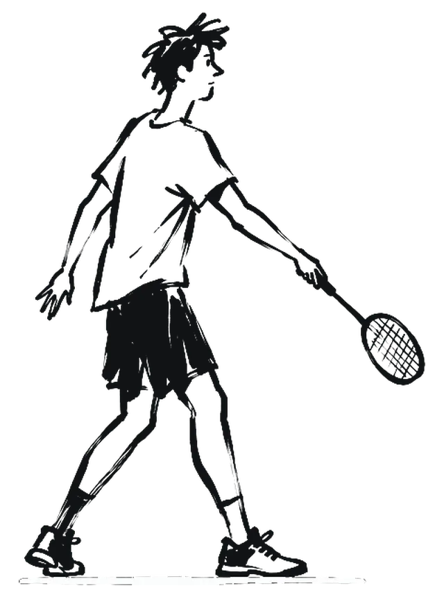
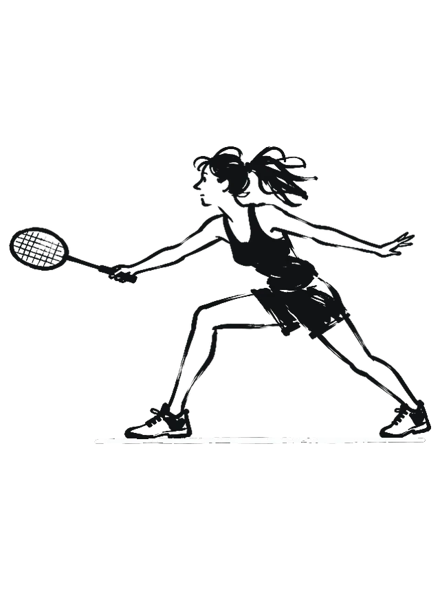
One rally between the case pair, Lin and Mo · 7 hits in 4.2 s · ◇ hitter unknown · short bar: the rally ends on this hit
A practice system for amateur badminton pairs
I play badminton as an amateur. Most training tools are made for professionals who train alone, while amateurs mostly practise with one regular partner. RallyLens is a phone app and a pair of wristbands. The partners choose what to practise on their own, and the app makes the plan. On court, the bands count hits and light up only between rallies. Afterwards, each writes one line, and the two lines sit side by side.
01Discover
A field study in four stages, with cards, recall and review
Four stages per session: usual play, two practice stages (one partner practises, the other feeds) and a scored game. Before and after each stage, both partners filled in a stage card on one tablet (goal, feeding plan, whether they understood each other), without seeing the other’s. About three days later, three pairs wrote recalls while watching their video, then reviewed it with the researcher.
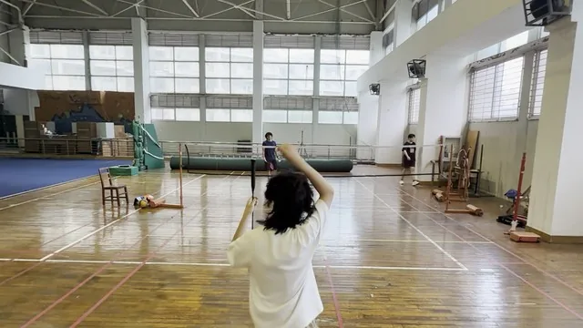
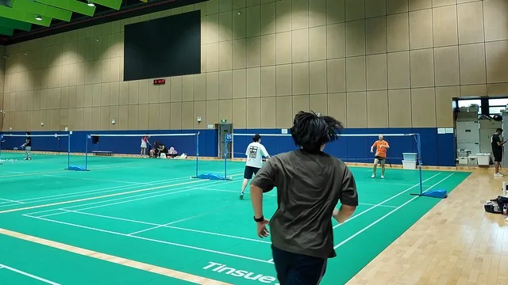
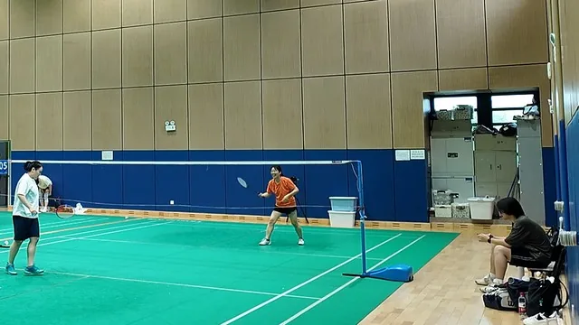
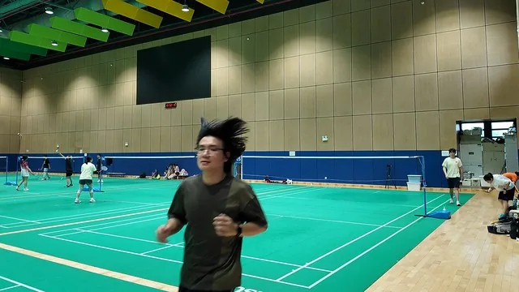
8pairs
regular partners
16people
aged 18–41
4stages
usual play, two practice stages, a scored game
2cameras
one at each end of the court
21/ 31 individual ratings said the two understood each other “consistently”
1/ 16 practice stages where both wrote the same feeding plan
The case pair · Lin and Mo
They wanted to practise different things
Before they arrived, both had picked “No, just play as usual”.
Lin
Wants to practisekeep rallies going
Mo
Wants to practisenet play
02Define
Mismatched understanding between partners, and the limits of video analysis
1. Mismatched understanding · Lin and Mo’s cards and recalls from one session
Card: a short form each partner filled in on one tablet before and after each stage (goal, feeding plan, how it went, whether they understood each other), unseen by the other. Recall: what each wrote about three days later while watching the video.
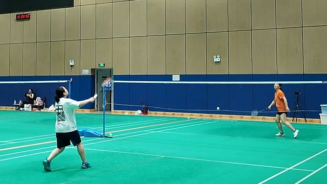
Usual playplay as usual
cardserving was the hardest part
recallI can’t serve well, so the shuttle went too high and got smashed
Lin does not mention Mo holding back. Mo does not mention Lin being smashed.
cardit all went smoothly
recallI held back my power to cooperate as much as I could
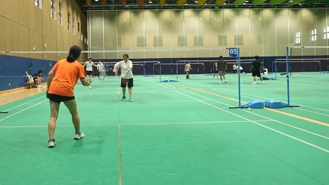
Lin practisesMo feeds, as agreed
cardasked the partner for more changes of direction, more rear-court balls
recallin the second stage we just followed the shuttle
Both set the goal “placement and lines”. Lin wanted the opposite of Mo’s plan. Both still ticked “consistent”.
cardplanned to feed the same ball again and again, as in a match
recallthis stage was meant to be the front-court practice I wanted
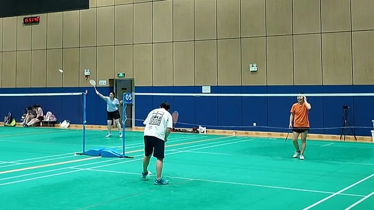
Scored gamethe last stage (Mo’s practice stage is not shown)
recallonce we were scoring, I wanted to move the other player around, not give my partner the balls they wanted
The only stage where their accounts agree: once scoring began, neither looked after the other’s practice.
recallI played more aggressively and stopped looking after the other’s practice
2. Limits of video analysis · it can place every hit, but cannot judge the practice
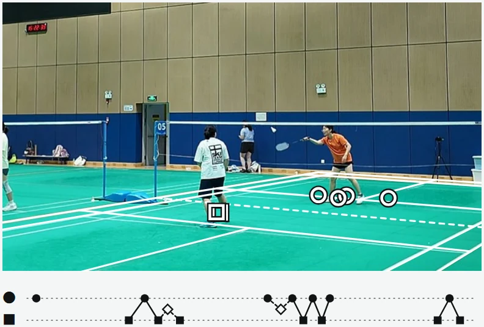
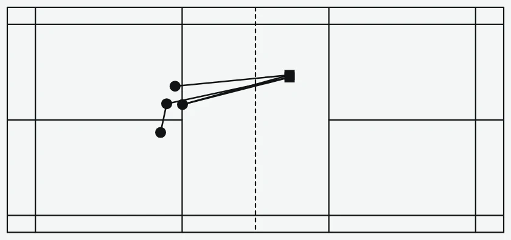
Method: the court lines are mapped onto one camera’s image, pose estimation finds the players’ feet, and from these each hitter’s position on court is worked out (white ring Lin, white square Mo).
How well the models judge practice quality (AUC, tested on pairs left out of training)
- good feed, reached, returnedabout chance
- whether the rally carries onjust above chance
chanceperfect
3. Design principles · from the findings to the product
Before · responds to mismatched understanding
Each partner chooses alone, and the app makes one plan
In the review, a player said ticking “roughly consistent” only meant roughly knowing what to do, not having the same plan.
During · responds to mismatched understanding
The partners agree when each part starts; the system signals only between rallies
In the review, a player said practice turned into ordinary rallying once a ball went high. During a swing, a buzz on the arm is hard to notice.
After · responds to mismatched understanding
The two accounts sit side by side and are never merged into one
Only by reading the other’s recall did each learn what the other had been thinking. Both kept their own account.
Throughout · responds to the limits of video analysis
The system counts hits, gives no score, and leaves blank what it cannot tell
In the review, no one could tie their account to a single hit. One player preferred a blank to a conclusion forced by the machine.
03Develop
The phone stays courtside, the bands work on court
Anything that needs reading or typing happens on the phone by the court. On court, no one looks at a screen: the bands start each part, count hits and light up between rallies.
1. Blueprint of the hour
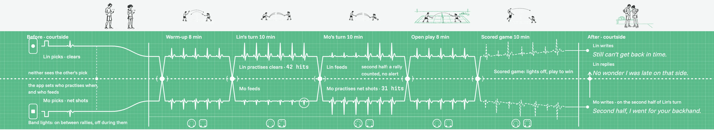
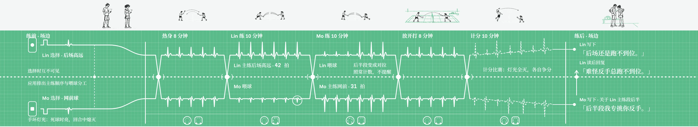
2. Core screens
Before, on the phone
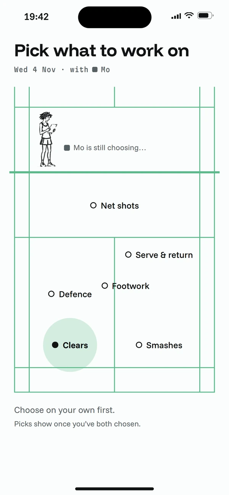
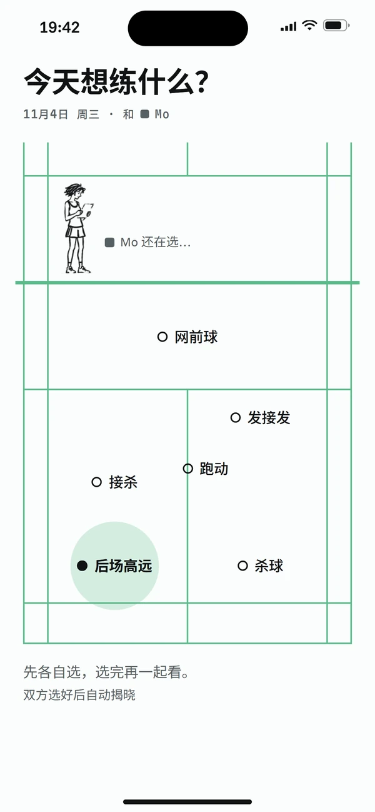
Pick what to work on
- Tap the spot on the court you want to work on
- Both picks show once both have chosen
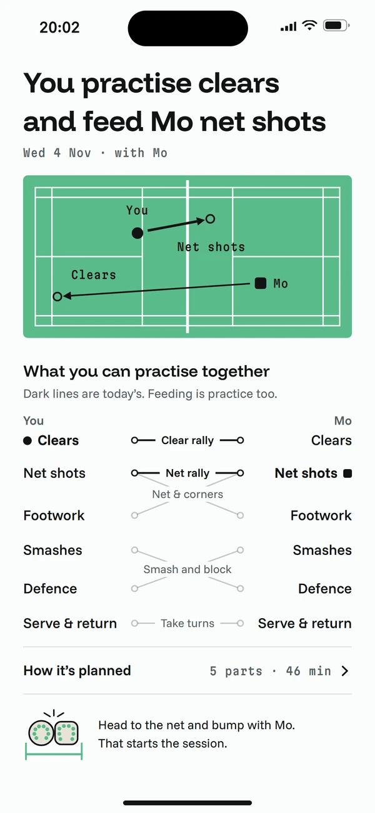
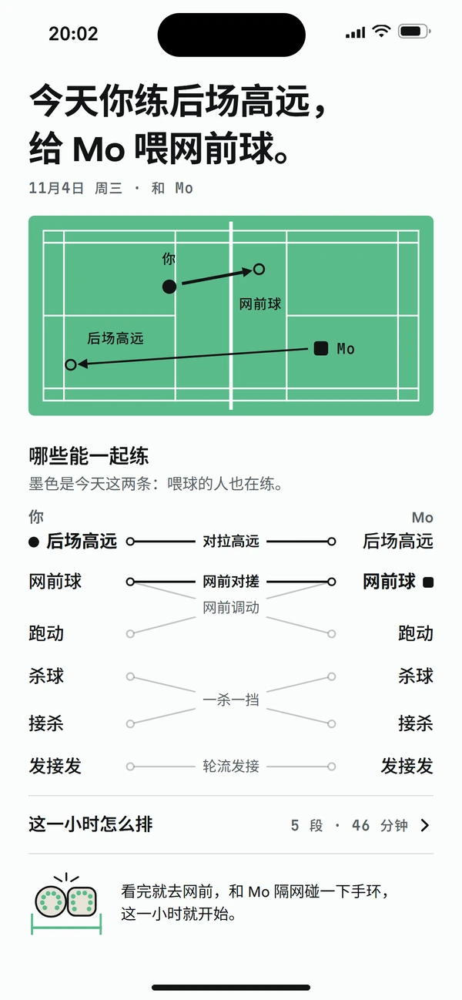
The coach’s plan
- Top line: what each practises and what each feeds
- The diagram pairs what both want; feeding counts as practice too
- No start button: a bump at the net starts the session
During, on court, no screen
During practice the phone lies courtside. The lock screen and Dynamic Island show the current part and the time left, with nothing to tap. On court, the bands do the rest.
Optional: the two phones move behind the baselines to film, or the venue’s cameras are used. Video only places the hits, so the app can count net and rear-court hits afterwards, with no score.
After, on the phone
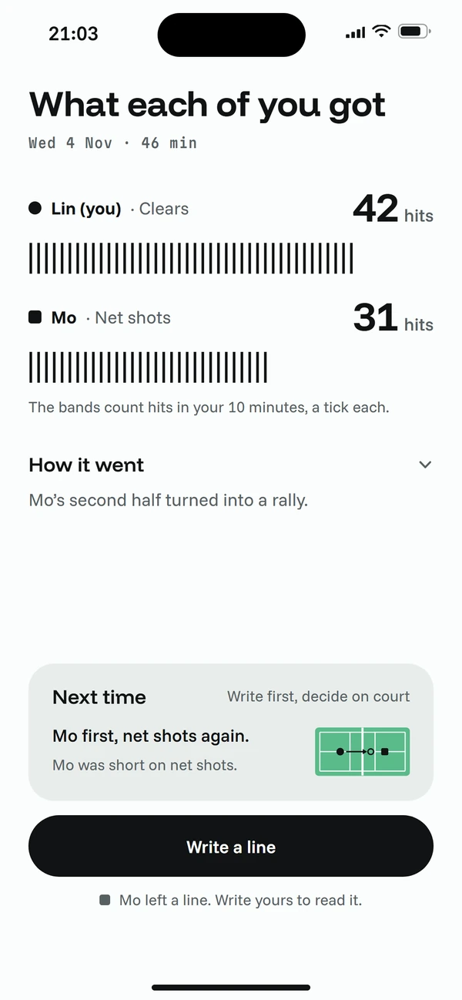
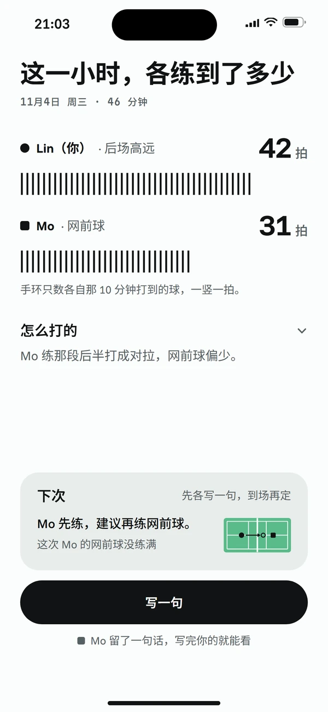
What each of you got
- Hits in each player’s own 10 minutes, one tick per hit
- How it went: with video, net and rear-court hits are counted by where they were played
- Next time: the app suggests, each writes a line, and they decide on court
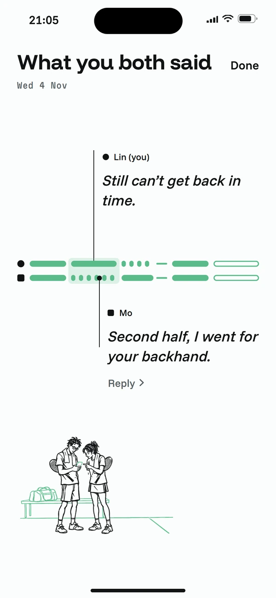
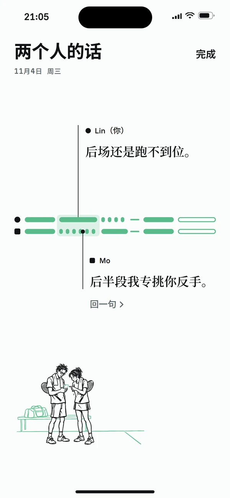
What you both said
- Write your line first, then read your partner’s
- Each line is tied to the part it is about; the other can only reply beside it
04Deliver
Two bands, a case and an app
The bands have no screen and no buttons. They wake and connect when taken out of the case, record hits while worn, and save the hour and charge once the case is closed.
Hardware · two bands and a case
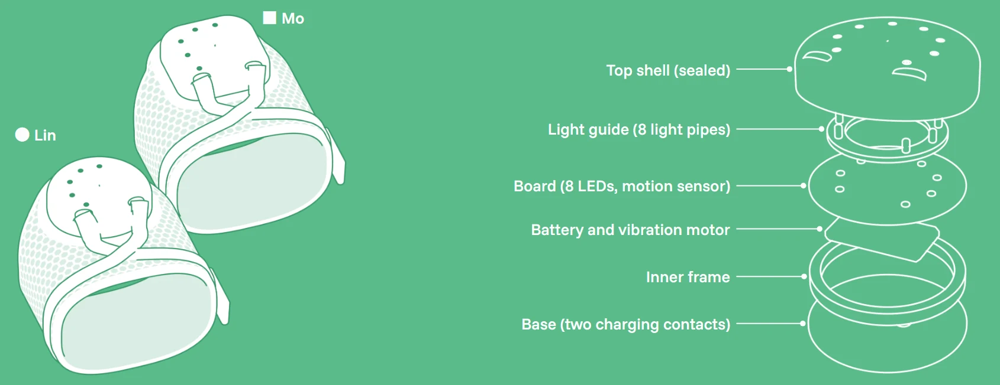
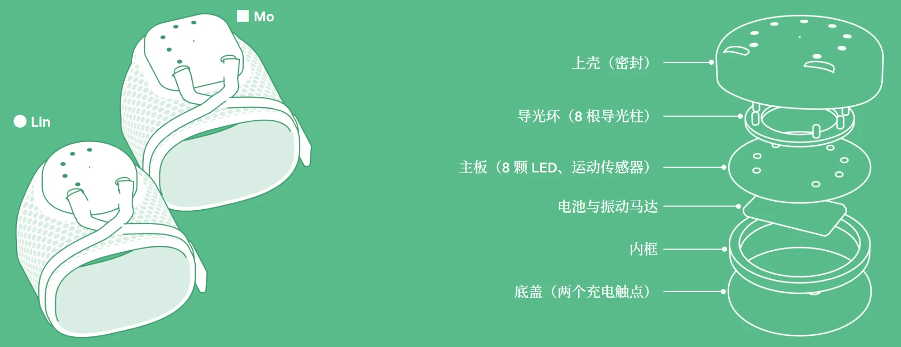
● round, 40 mm across · ■ square, 37 × 37 mm · 9.5 mm thick · 8 LEDs · one shared core
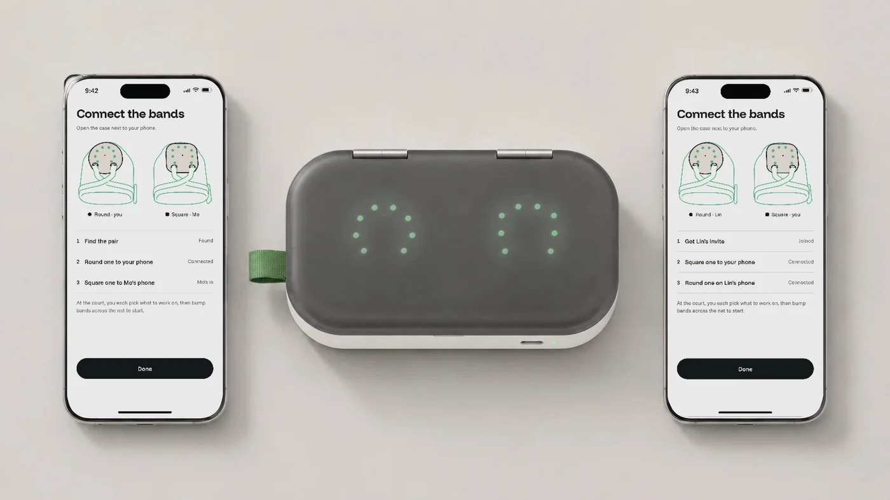
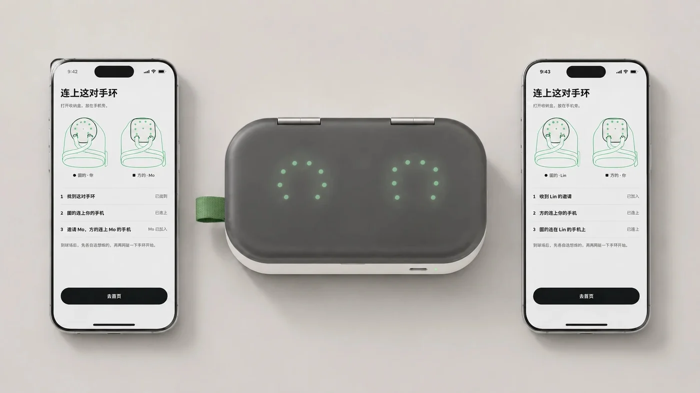
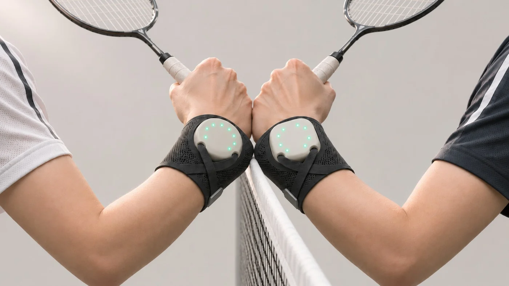
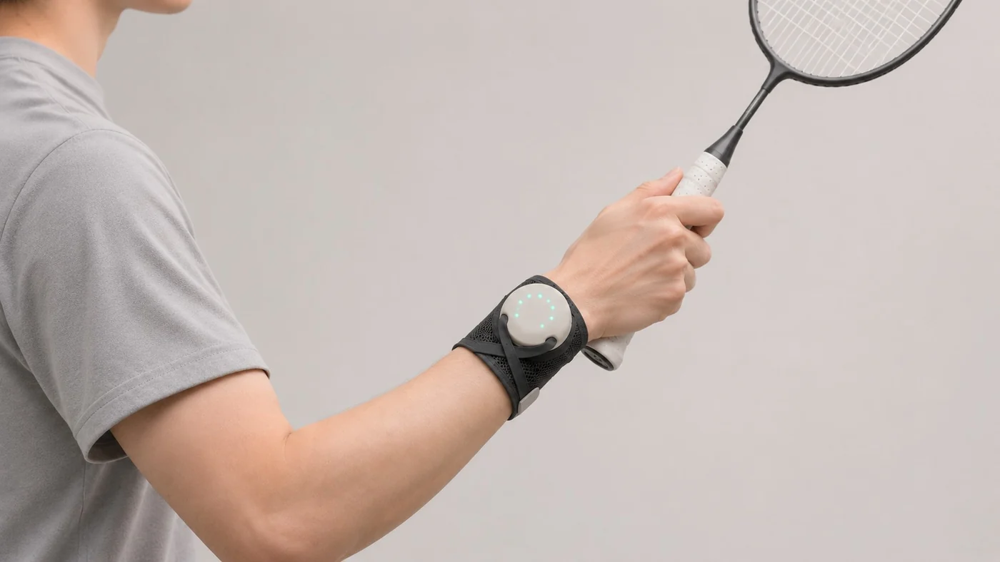
Each partner wears one band, and each band records only its wearer’s hits, so the app can tell who made each hit. The strap crosses once and sits above the wrist crease, clear of the back of the hand when the wrist bends.
App · a clickable prototype with 16 screens
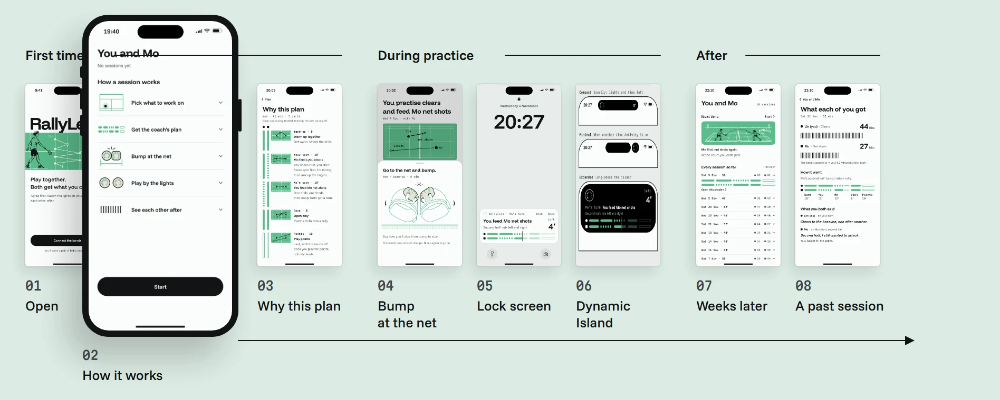
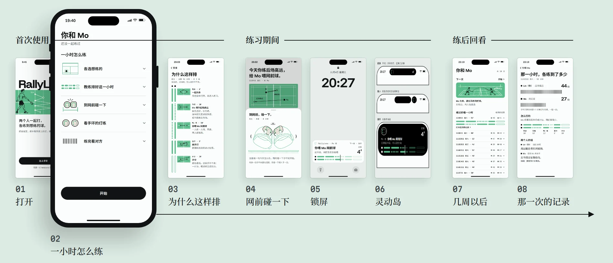
Results
Design: two bands (round and square), a case, and a clickable app prototype with 16 screens. Research: a four-stage field study with 8 pairs (16 people), stage cards, 2,204 hits coded one by one, a record format and a review prototype. The paper is in preparation for CSCW.
Value
For the pairs: after the review, their next plans changed little in content but became clearer. They named the goal first and agreed when to start scoring. For research: a record that keeps the hit-by-hit data and the two partners’ accounts side by side.
Reflection
I often play with friends at the hall, and I found that amateur players sit in a middle ground that design rarely takes seriously. We want to play better, but we can’t train to strict targets like professionals. When I started the research, out of habit, I wanted computer vision to score how well two partners worked together. But watching Mo on the video, quietly holding back so that Lin could return the shuttle, I suddenly felt it was absurd to judge this kind of play with a cold algorithm. Inclusion in sports technology should not only mean serving a few special groups. It should also mean respecting how most ordinary people really play: they miss, they care how their friends feel, and they get carried away once the score counts. So in the end I removed every feature that acted like a referee. The bands only count hits, quietly, and no single standard decides whether a session went well.
Details
- Title
- RallyLens. Two wristbands and an app for two amateur badminton partners.
- Medium
- Two wristbands, a case and a clickable app prototype with 16 screens · a field study with 8 pairs
- Skills
- User research and analysis · video fieldwork · interaction and interface design (UI/UX) · hardware design · computer vision and machine learning (pose, shot paths, pair metrics)
- Tools
- Figma, Photoshop, Premiere, Blender · Python, PyTorch, OpenCV, FFmpeg
Study, cards and coding as reported in the paper draft and its supplement. Names changed; cards and recalls translated for meaning. Stills from the study video. Ink drawings made with ChatGPT image generation; product photos made with image generation; the line drawings and the white model come from the band’s 3D model in Blender.